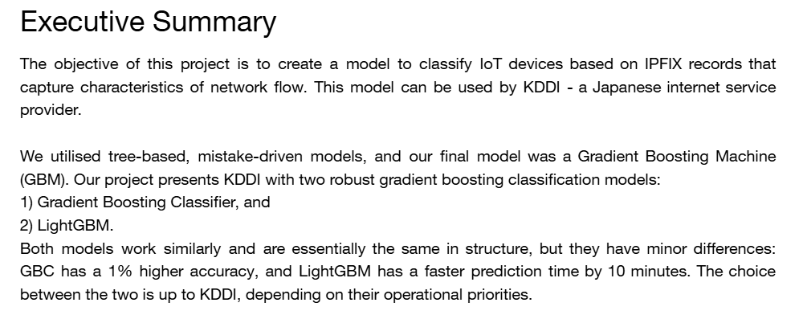

IN PROGRESS
Disclaimer: Due to data privacy and confidentiality requirements, limited information will be provided about this project.
Tasks Performed
- Preliminary data analysis (confusion matrices and precision score comparisons) were used to identify which type of devices were prone to misclassifications. This insight made us aware about how shared characteristics within device classes could lead to misclassifications. For example, how two different brands of security cameras can share many similar IoT features such as bandwidth transmission, hence appearing similar to each other which can cause the different brands to be misclassified.
- Feature importance testing was performed to identify both irrelevant and high importance features in the dataset.
- Sampling techniques, particularly stratified sampling (both with and without replacement) and a sliding window, were coded to analyse the change in each models' accuracy over time and determine how often the models would need to be retrained when accuracy drops.
- Model design and testing was the main focus of the project. The following models were used:
- Random Forest
- XGBoost with both Lasso (L1) and Ridge (L2) regularisation
- Gradient Boosting Classifier (GBM) with optimised learning rate, tree depth and number of trees
- LightGBM
Reflection
Overall, I was pleased with the final product that my team produced. Collaborating on EDAs enabled us to generate insightful findings which we were able to showcase in our completed database. I was able to gain a lot of experience transforming raw data into an informative dataset and also learned about different interpolation techniques which I can use in my future projects to make calculated estimations.
Contributors
- Tonia Li
- Harsh Charu Murali
- Branko Stajic
- Alex Yang Zhu
- Zach Wan
- UNSW Sydney
- Oracle